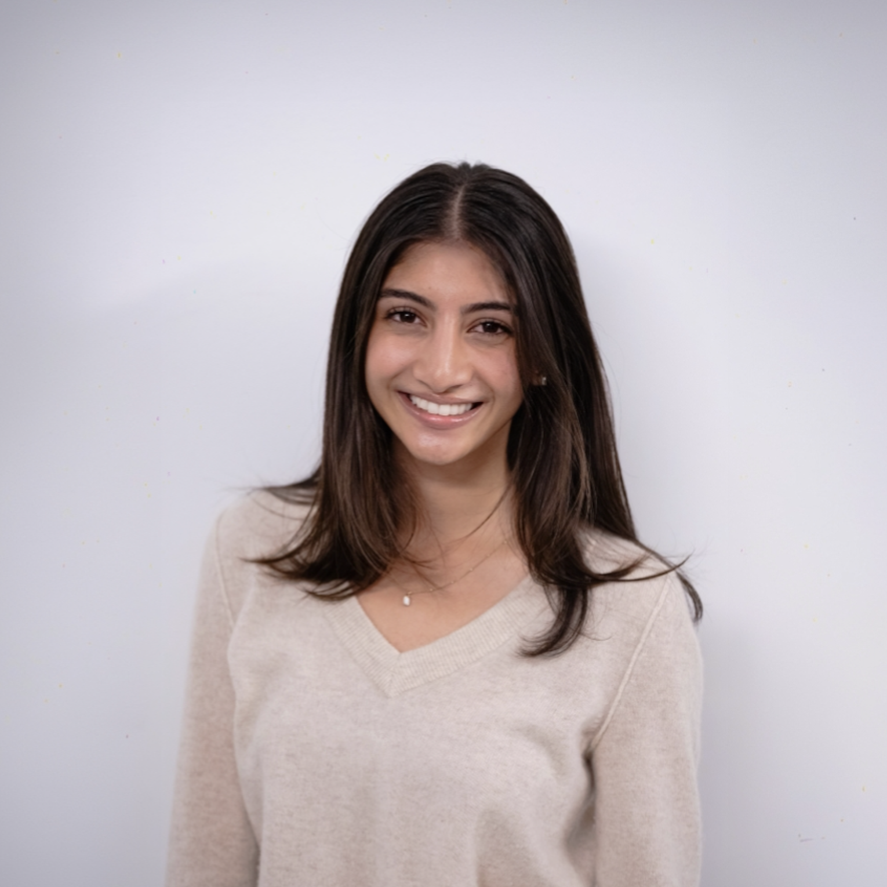
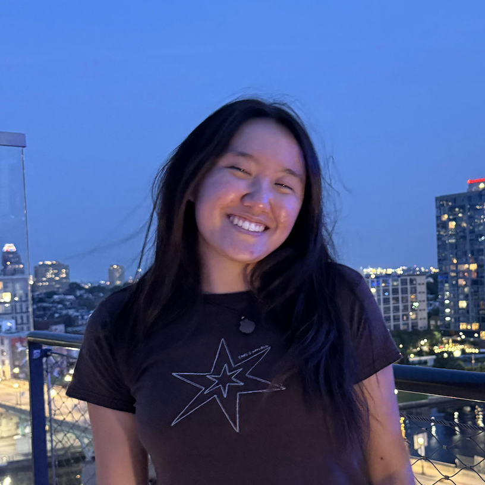
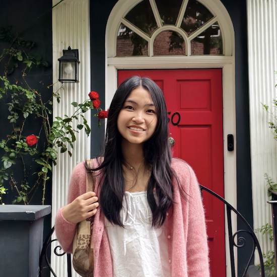
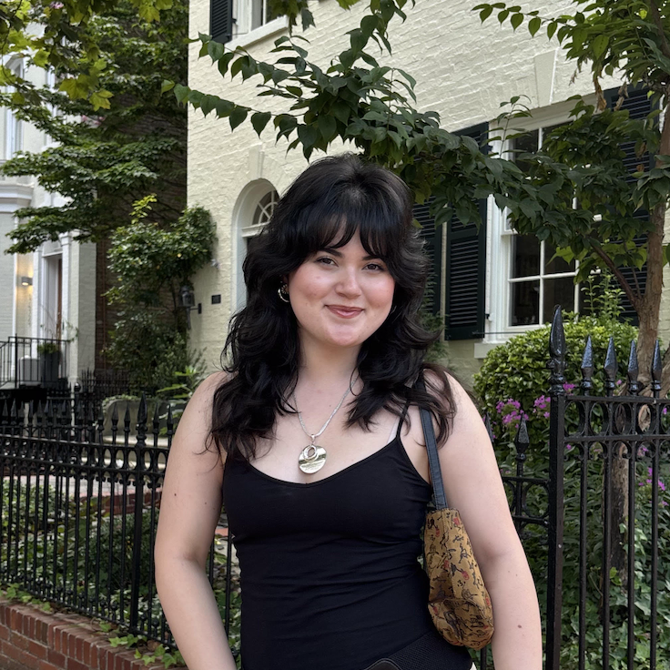
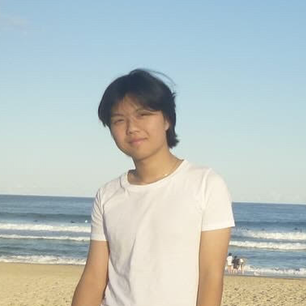
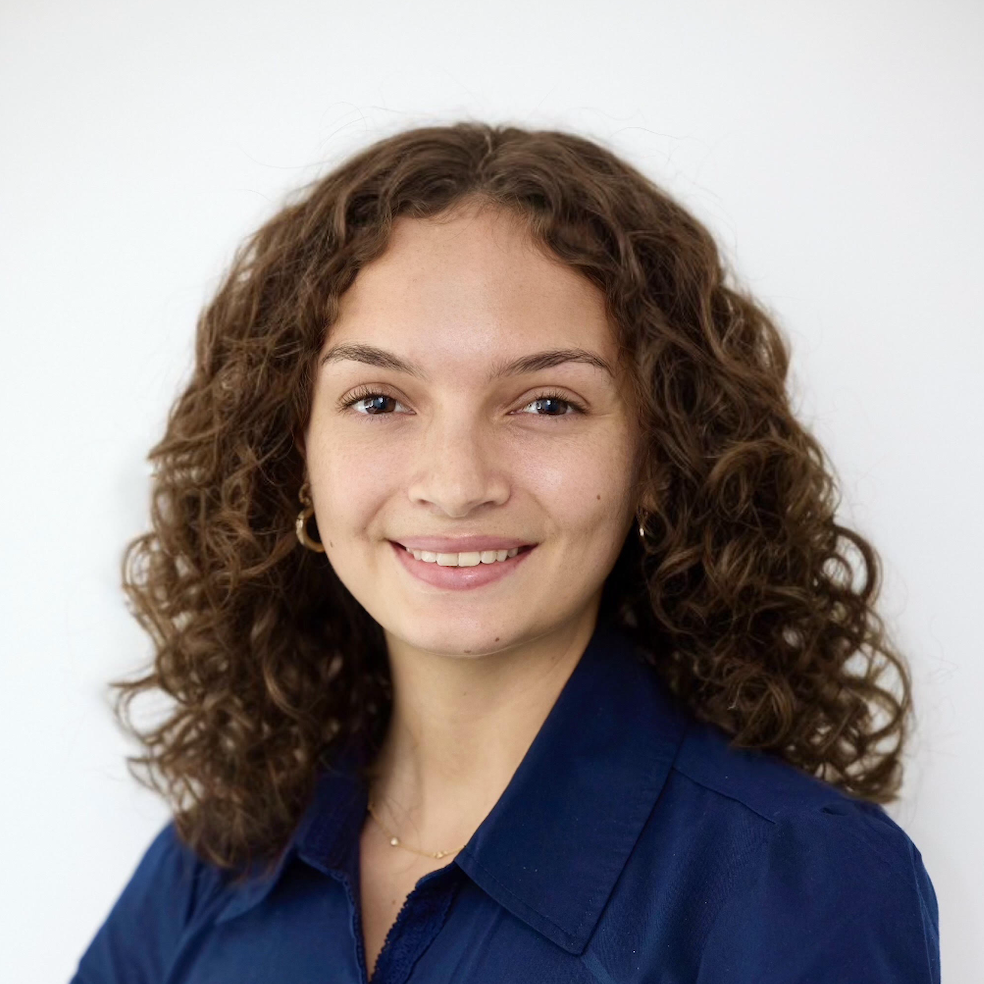
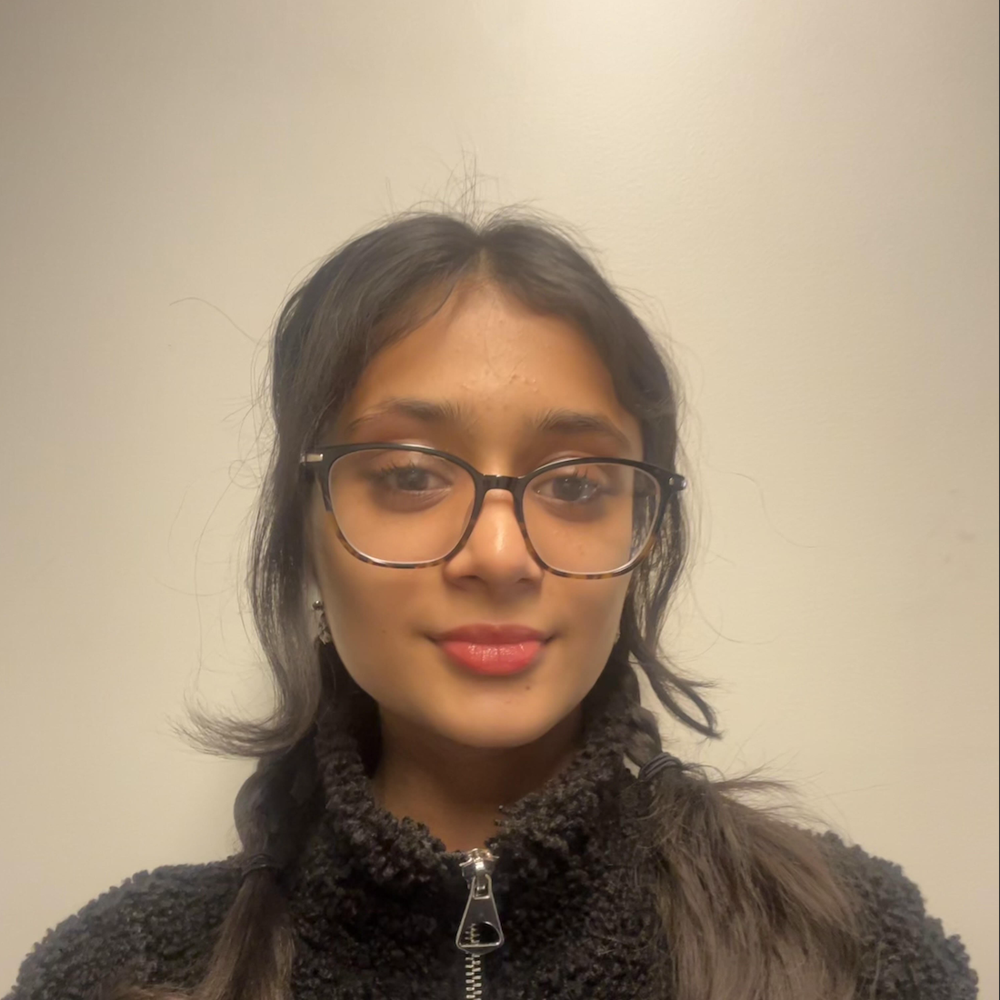
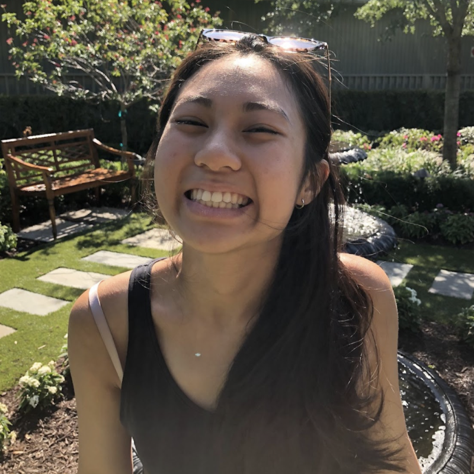
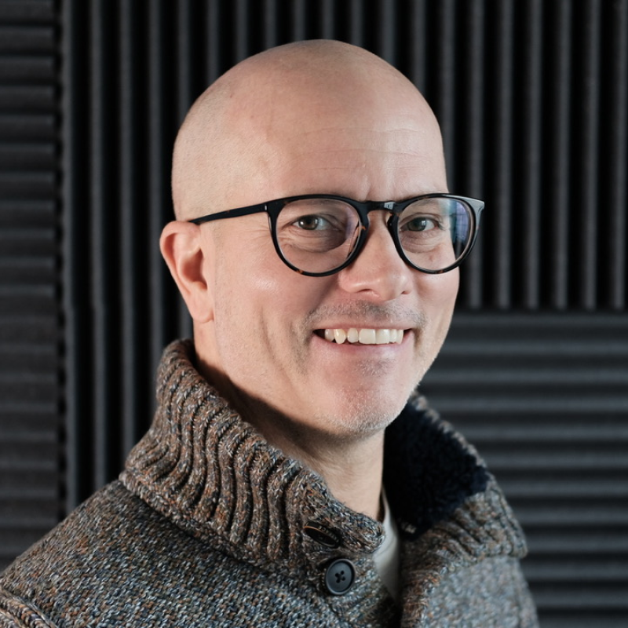
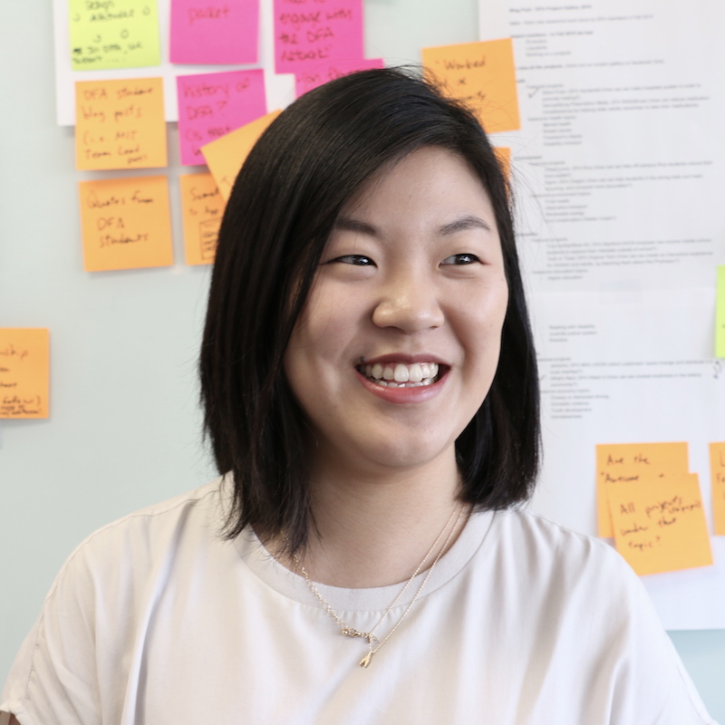

THE EXEC BOARD
-

SERENA SAXENA
STUDIO LEAD
BROWN '27 | BEHAVIORAL DECISION SCIENCES + INTERNATIONAL & PUBLIC AFFAIRS
Serena is a junior at Brown pursuing Behavioral Decision Sciences and International & Public Affairs. She is especially interested in using design as a tool to tell stories and amplify the voices of others. At DFA, many of her experiences have centered around community engagement, inclusive innovation, and giving voice to marginalized communities. Serena is also obsessed with exploring new cities (& finding the best matcha), flea/farmer’s markets, all things fashion, and watching basketball.
-
MELISSA CHEN
STUDIO LEAD
RISD '27 | INDUSTRIAL DESIGN + NCSS
Melissa is a junior at RISD studying Industrial Design. She is passionate about human-centered experience design for products and spaces as a visualization of the joy of interaction. She seeks to spark connections and tell stories, underscoring a future that is more sustainable and accessible to all. Outside of DFA, she enjoys reading novels that inspire dream journaling.
-

ANGELA XU
TEAM LEAD
BROWN '27 | DESIGN ENGINEERING + URBAN STUDIES
Angela is a junior at Brown studying Design Engineering and Urban Studies. She's interested in the intersection of design, engineering, and technology in both physical and digital spaces, where she hopes to design and plan for people and their communities. Outside of DFA, she likes to try new restaurants, explore hiking trails, and curate Spotify playlists.
-

VIVIAN WANG
TEAM LEAD
BROWN '28' | COMPUTER SCIENCE + COGNITIVE NEUROSCIENCE
Vivian is a sophomore at Brown studying Computer Science and Cognitive Neuroscience. She is curious about the intersection between technology, human psychology, and design. She believes in using design as a tool for enhancing community engagement in innovative technologies. Outside of the studio, she likes visual art (drawing & painting), cross-wording, and trying new places to eat.
-

ALEXIA BODET
TEAM LEAD
BROWN '28' | COMPUTER SCIENCE + DESIGN ENGINEERING
Alexia is a sophomore at Brown studying Computer Science and Design Engineering. She is passionate about the intersection of technology and design, and she loves creating products that have a meaningful impact on communities. Outside of DFA, you can find her working as a barista at the Underground, thrifting clothes with fun buttons, and collecting smiskis.
-

RICHARD ZHANG
TEAM LEAD
BROWN '28' | COMPUTER SCIENCE
Richard is a sophomore at Brown studying Computer Science, Economics, and design, with interests at the intersection of tech, storytelling, and community. He finds passion in reimagining the world through design, from building products that empower and include marginalized communities to transforming discarded objects into art. His experiences at DFA center around user experiences and community engagement. Beyond design, Richard enjoys collecting postcards, exploring architecture, and finding inspiration in the everyday!
-

KAYA BRUNO
TEAM LEAD
BROWN '27' | MECHANICAL ENGINEERING
Kaya is a junior at Brown studying mechanical engineering. She is interested in the intersections of engineering, architecture, and construction. At DFA, she aims to showcase the full life cycle of design and explore the diverse ways creativity can flourish within a community. In her free time Kaya enjoys sci-fi novels, ocean swimming, adding to her recipe book, and rooting for the Knicks.
-

TANVI MITTAL
TEAM LEAD
RISD '27 | INDUSTRAL DESIGN + HPSS
Tanvi is a junior at RISD exploring the intersection of care, memory, and materiality as a vessel to support healing and connection. She is interested in creating systems, products, and materials that foster trust, tenderness, and restoration in healthcare spaces.
-
ELLA BLANCO
TEAM LEAD
BROWN '28 | DESIGN ENGINEERING + CLASSICS
Ella Blanco is a sophomore at Brown University studying Design Engineering and Classics. She is particularly interested in the intersection of design, art, and technology, discovering the ways in which technology transforms art and exploring how designers use ever-evolving technological advancements in their work. At DFA, she focuses on accessibility and sustainability, highlighting the power of human-centered design, empathy, and innovation in changing the world for the better. In her spare time, you can find her designing 3D prints, baking new recipes, and exploring local coffee shops.
PAST SPEAKERS
-

CHERILYN TAN
DFA NATIONAL
PREV. DFA STUDIO LEAD '19-'20
-

JUSTIN SIROTIN
RISD INDUSTRIAL DESIGN PROFESSOR
ROUTEWERKS
-

CATHERINE (CC) CHUNG
DESIGN @ TWILLIO
PREV. DFA NATIONAL FELLOW
-
MARKUS BERGER
RISD INTERIOR ARCH. PROFESSOR
DECOST